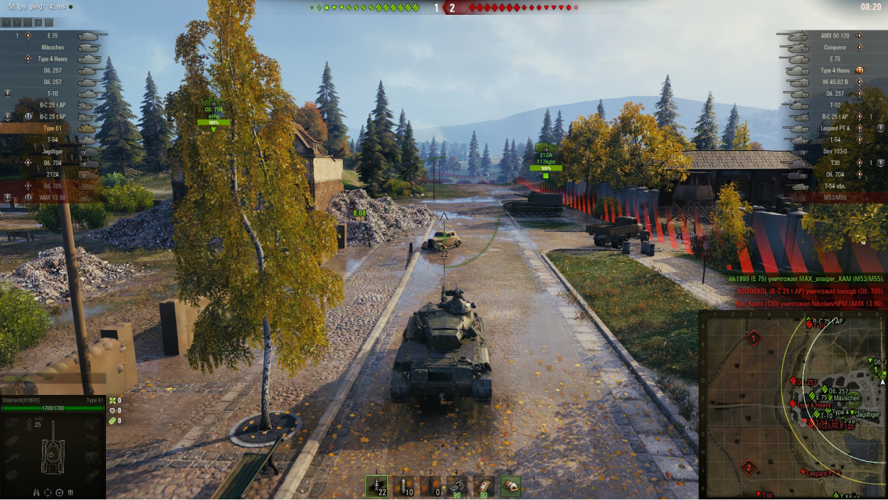

World of Tanks — это массовая многопользовательская онлайн-игра, полностью посвящённая бронированным машинам середины XX века. У игроков есть возможность плечом к плечу сражаться с поклонниками стальных гигантов со всех уголков планеты, отстаивая свои претензии на мировое танковое господство.
Продвинутая система прокачки и развития позволит вам испытать любую из машин, представленных в игре. Нравится ли вам изматывать противника на юрких лёгких танках, совершать неистовые прорывы на универсальных средних, испепелять врагов исполинскими «тяжами» или вы желаете стать первоклассным снайпером, управляя дальнобойной артиллерией, — машина любого класса может быть поистине смертоносным орудием в руках настоящего профессионала.
Однако даже самые сильные игроки не смогут добиться успеха в одиночку. В World of Tanks всё решает коллектив, а победа достигается за счёт слаженной работы команды, где каждому игроку отводится своя роль.
Wot разработана игра белорусской студией Wargaming.net. Являясь ММО-экшеном, игра не ограничивается рамками только этого жанра. World of Tanks предоставляtn игрокам жанровое многообразие.
Шутер. Подвижная камера может превратить игру из экшена от третьего лица в полноценный шутер, позволяя уничтожать врагов как в обычном, так и в снайперском режиме.
РПГ. Ваша машина — не просто бронированное орудие на гусеницах. Это живое, постоянно развивающееся существо, которое нужно растить и укреплять. Заработанные в сражениях опыт и кредиты позволят вам исследовать и покупать более совершенные элементы для вашего «боевого коня», улучшая тем самым его первоначальные характеристики.
Экшен. Командные операции по обнаружению и ликвидации вражеских танков, равно как и внезапные столкновения с противником, потребуют от вас молниеносной реакции и быстрых, эффективных действий.
Огромные поля Восточной Европы, узкие улочки немецких городов или воссозданная легендарная Прохоровка — всё это лишь малая часть того, что ожидает игроков. Большое количество карт с открытой местностью и плотными городскими застройками позволят не только насладиться многообразием пейзажей, но и применять тактические уловки, исходя из конкретных боевых условий.
Любой желающий сможет совершенно бесплатно скачать клиент World of Tanks и вступить в бой сразу же после установки игры. Никакого утомительного ожидания: развитие экипажа, получение доступа к новым танкам и открытие более совершенных модификаций происходит в рамках динамичных PvP-сражений, участвовать в которых можно в любое время.
История развития World of Tanks как киберспортивной дисциплины относится к разряду тех, которые не забываются. Играли, проводили турниры и даже не мечтали о глобальном eSports-сообществе танкистов. Поначалу никто не верил, что World of Tanks способна дотянуться до планки кибергигантов вроде Quake и League of Legends. Спустя некоторое время сомнения пропали даже у закоренелых скептиков: пары-тройки турниров хватило на то, чтобы убедить всех в мощной соревновательной составляющей игры.
Успех танковых онлайн-баталий заметили организаторы крупнейшего на тот момент киберчемпионата World Cyber Games. «Танки» взяли «олимпийскую» высоту: игру включили в перечень официальных eSports-дисциплин WCG.
В феврале 2013 года была создана киберспортивная лига Wargaming.net League.